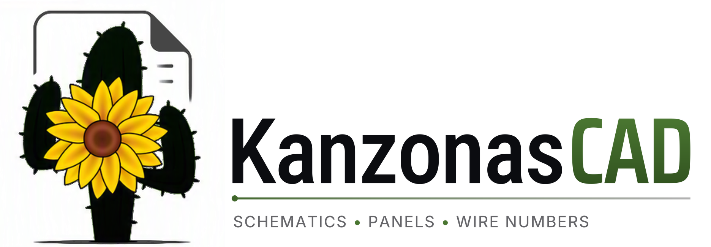

Free electrical CAD
For people who know AutoCAD but want fewer commands, fewer settings and fewer surprises. Open source, no account, no subscription.
Newest version from GitHub releases
Linux (AppImage) · Linux (tar.gz) · Portable for Windows (zip) · Windows without installing (zip) · All releases · Source code on GitHub
What it does
AutoCAD-style drawing
Command line, object snaps, ortho, polar tracking, grips, and window, crossing and lasso selection.
Projects of sheets
ANSI sheets with a grid of zones (6-D1 references) and an editable title block.
Your own library
JIC/NFPA schematic symbols, panel footprints and parts. Three-phase power symbols, terminal strips and PLC I/O points.
Wires and wire numbers
Wires stay attached to symbols. Wire numbers (6001) number themselves, with distribution blocks (6001A) and off-sheet connectors.
Tags and cross-references
Device tags by page number (CR601), contacts linked to their coil, and cross-references that update themselves.
Files
DXF in and out, DWG in (AutoCAD R13 to 2018), PDF out.
A free alternative to AutoCAD Electrical
For people who know AutoCAD Electrical but not its price, or who want an electrical CAD program that also runs on Linux.
| Feature | KanzonasCAD | AutoCAD Electrical | QElectroTech |
|---|---|---|---|
| Price | Free, open source (MIT) | Included with an AutoCAD subscription; not sold on its own | Free, open source (GPL) |
| Runs on | Windows, Linux | Windows | Windows, macOS, Linux |
| Works like AutoCAD (command line, snaps, grips) | Yes | Yes (built on AutoCAD) | No (its own way of working) |
| JIC/NFPA symbols | Yes | Yes (JIC library) | Not confirmed |
| Wire numbers that number themselves | Yes | Yes | Yes |
| Cross-references that update themselves | Yes (contacts linked to their coil) | Yes | Yes |
| AutoCAD files | DXF in and out, DWG in | DWG (its own format) | DXF out |
| Reports (bill of materials, wire lists) | Coming next | Yes | Bill of materials |
| Runs offline, no account | Yes | Autodesk account; online every 30 days | Yes |
Checked against each project's own pages in November 2026. Other products change, so check their sites before deciding. AutoCAD and AutoCAD Electrical are trademarks of Autodesk, Inc.
Sources
- Autodesk: AutoCAD subscription FAQ (Electrical is included with AutoCAD and not sold on its own; the toolsets are Windows only), Electrical toolset (wire numbering, coil and contact cross-references, reports), JIC symbol library, sign-in and the 30-day offline period
- QElectroTech: features (automatic numbering, cross-references, DXF, GPL), bill of materials, downloads for Windows, macOS and Linux
Good to know
- Free and open source (MIT)
- Windows and Linux
- Installs without administrator rights
- Portable: runs from a USB stick
- Tells you when an update is out
- Coming next: panel layouts with DIN rail and wire duct, and reports